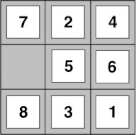
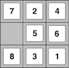

Inteligencia Artificial
Claudio Vaucheret
Búsqueda Heurística
Created: 2022-09-22 jue 00:01
Motivación
Motivación
Búsqueda Ciega
- Realizan un recorrido exhaustivo del árbol de búsqueda.
- Son independientes del problema que queremos resolver.
- Aún en casos de espacios finitos, resultan de poco interés prácticos cuando el espacio resulta ser suficientemente grande.
¡Qué se haga la luz!
 |
Epistemología o Teoría del Conocimiento Usa conocimiento específico del problema |
Consideraciones
Algunas de las estrategias:
- pueden hallar soluciones más eficientes que las estrategias ciegas;
- pueden no hallar la mejor solución (máximo local).
¡Qué se haga la luz!
- Se introduce una función de evaluación \(f(n)\) y se expande un nodo basado en la información que dé la función.
- Generalmente se expande el nodo con menor valor de la función, porque la evaluación mide distancias a la meta.
- Esta función da información acerca del nodo, como por ejemplo el costo de llegar desde la raíz a una meta pasando por ese nodo o una estimación de cuanto falta para llegar desde ese nodo a la meta más cercana.
- Función de evaluación perfecta: costo real de la raíz a la meta más cercana pasando por el nodo en el que el agente se encuentra :)
Heurísticas
¿Por qué la gallinita dijo EUREKA?
Heurística
La función de evaluación se puede implementar con el costo estimado del camino menos costoso desde el nodo que estamos evaluando a una meta.
 Arquímides de Siracusa (287 a.C - 212 a.C.) Arquímides de Siracusa (287 a.C - 212 a.C.) |
Heurística: Del griego heuriskein |
Heurística
Procedimiento Criterio que puede resolver un problema pero que no hay garantía de que siempre lo resuelva.
Función Estimación del costo necesario para alcanzar la solución más cercana desde el estado actual.
Las heurísticas son formalizadas como reglas para elegir (buscar) las ramas en el espacio de estados que son más probables de llegar a una solución aceptable del problema
Heurísticas: Ejemplo
8-puzzle
\(h_1(n)\) = Número de tejas fuera de lugar

¿Cuál es el valor de la heurísitica para el estado inicial?
\(h_1(Start State)\) = 6
Heurísticas: 8-puzzle
|
8-puzzle \(h_1(n)\) = Número de tejas fuera de lugar |

 

¿Cuál es el valor de la heurísitica para cada estado?
\(h_1() = 6\) \(h_1() = 7\) \(h_1() = 7\) \(h_1() = 5\)
Heurística
- Función Estimación del costo necesario para alcanzar la meta más cercana desde el estado actual.
- La función heurística es una forma de informar a la búsqueda sobre la dirección a la meta. Provee una modo informado de adivinar cuál vecino de un nodo nos guía a la meta.
- Compromiso entre:
- Ahorro en el esfuerzo en la búsqueda.
- Costo del cálculo de la heurística en cada nodo.
Heurística Admisible
Heurística Admisible
Diremos que la heurística es admisible si subestima el costo, esto es, si su estimación del costo a la meta es menor o igual que el costo real. Si \(g\) es el costo real de llegar desde el nodo actual a la meta entonces \(h\leq g\).
¿Cómo es el valor de la heurística en un estado meta, si es admisible?
Heurística Admisible
Heurística Admisible
Diremos que la heurística es admisible si subestima el costo, esto es, si su estimación del costo a la meta es menor o igual que el costo real. Si \(g\) es el costo real de llegar desde el nodo actual a la meta entonces \(h\leq g\).
La función heurística \(h_1(n)\) = Número de tejas fuera de lugar, ¿es subestimada?¿es admisible?
Heurística Admisible
- La función heurística \(h_1(n)\) = Número de tejas fuera de lugar, ¿es admisible? Si.
- Porque \(\ldots\)
- Cada teja fuera de lugar tiene que moverse al menos una vez para llegar a su lugar. \(\therefore h_1(n) \leq\) Costo Real.
Otra Heurística: 8-puzzle
Distancia de /Manhattan/
\(h_2(n)\) = Suma de las distancias de las tejas hasta su posición en la meta. Se suman las distancias verticales y horizontales (las tejas no pueden moverse en diagonal)
¿Cuál es el valor de la distancia de Manhattan para el nodo inicial?
\(h_2(S)\) = 4+0+3+3+1+0+2+1 = 14
¿Es Admisible? Si.
Heurísticas: 8-puzzle
\(h_1(n)\) = Número de tejas fuera de lugar
\(h_2(n)\) = Distancia de Manhattan
Suma de las distancias de las tejas hasta su posición en la meta. Se suman las distancias verticales y horizontales (las tejas no pueden moverse en diagonal)
¿Cuál es el valor de la distancia de Manhattan para el nodo inicial?
\(h_1(S) =6\)
\(h_2(S)\) = 4+0+3+3+1+0+2+1 = 14
¿Cuál elijo? ¿Cuál es mejor?
Dominación
Si tenemos dos heurísiticas,
¿Cuál es mejor?
Dominación
Si \(h_2(n) \geq h_1(n)\) para todo \(n\) (ambas admisibles) entonces \(h_2\) domina a \(h_1\) y es mejor para la búsqueda.
Dadas heurísticas admisibles \(h_a\), \(h_b\), \[ h(n) = \max(h_a(n),h_b(n)) \]
es también admisible y domina a \(h_a\) y a \(h_b\)
Inventando Funciones Heurísticas Admisibles
Problemas relajados
Un problema con menos restricciones sobre las acciones se denomina problema relajado.
Inventando Funciones Heurísticas Admisibles
Ejemplo 8-puzzle
Una teja puede moverse desde el cuadrado A al cuadrado B si: A está horizontalmente o verticalmente adyacente a B y B es el blanco.
Problemas relajados
- Una teja se puede mover de un cuadrado A a uno B si A está adyacente a B.
- Una teja se puede mover desde un cuadrado A a uno B si B es el blanco.
- Una teja se puede mover desde un cuadrado A a uno B.
La idea de la distancia de Manhattan surge del primer problema relajado. Y la heurística \(h_1\) del tercer problema.
Búsqueda Heurística
Primero el Mejor - Best-first Search
Best-first Search
- Idea Usar como función de evaluación \(f(n)\) por cada nodo, una estimación de su cercanía a la meta.
- Expande los nodos más "cercanos" primero.
- Implementación La frontera es una cola ordenada por la función de evaluación.
- Estrategias La elección de \(f\) determina la estrategia:
- Greedy Best-First Search: \(f(n)=h(n)\)
- \(A^*\): \(f(n)=g(n)+ h(n)\)
Greedy Best-First search
\(f(n)=h(n)\)
La función de evaluación es una heurística \(h(n)\), estimación del costo desde \(n\) a la meta más cercana.
Greedy best- First Search expande los nodos que parecen estar más cerca de la meta.
Greedy Best-First search
Implementación
Selecciona el primero de la frontera:
select(Nodo,[Nodo|Frontera], Frontera).
La frontera es una cola ordenada por la heurística.
add_to_frontier(Vecinos, Frontera1, Frontera3):-
append(Frontera1,Vecinos,Frontera2),
sort_by_h(Frontera2,Frontera3).
Greedy Best-First search
Ir a Bucarest
\(h_{{\rm SLD}}(n)\) = Distancia en línea recta (a vuelo de pájaro) desde \(n\) a Bucarest.
Costos en Km
Ejemplo

Ejemplo
Ejemplo

Ejemplo

Propiedades de Greedy Best-First Search
- ¿Completo?: No, puede entrar en ciclos infinitos, e.g. Iasi \(\to\) Neamt \(\to\) Iasi \(\to\) Neamt \(\to\) Es completo en espacios finitos con verificacióon de estados repetidos
- ¿Tiempo?: \(O(b^m)\), pero una buena heurística puede dar grandes mejoras
- ¿Espacio?: \(O(b^m)\) conserva todos los nodos en memoria
- ¿Óptimo?: No
\(A^*\)
Idea
Evitar expandir caminos que ya son caros. Para esto combina información de:
- Costo exacto hasta el punto actual de la búsqueda; y
- Costo estimado desde el punto actual a la meta.
\(A^*\)
La función de evaluación es \(f(n) = g(n) + h(n)\)
- \(g(n)\) = costo real desde el estado inicial hasta llegar a \(n\)
- \(h(n)\) = costo estimado desde \(n\) a la meta
- \(f(n)\) = costo estimado de un camino a la meta que pasa por \(n\)

\(A^*\)
Implementación
Selecciona el primero de la frontera:
select(Nodo,[Nodo|Frontera], Frontera).
La frontera es una cola ordenada por la función f.
add_to_frontier(Vecinos, Frontera1, Frontera3):-
append(Frontera1,Vecinos,Frontera2),
sort_by_f(Frontera2,Frontera3).
\(A^*\): Condiciones de Optimalidad
theorem
\(A^*\) implementado árboles de búsqueda es óptimo si \(h(n)\) es admisible. (Demostración a cargo del lector :) Ver Poole o Russell)
\(A^*\) usa una heurística admisible
\(h(n) \leq h^*(n)\) donde \(h^*(n)\) es el costo real desde \(n\). También requiere que \(h(n)\geq 0\), de manera que \(h(G)=0\) para toda meta \(G\).
Ejemplo de \(A^*\)
Ejemplo
\(h_{{\rm SLD}}(n)\) nunca sobrestima la distancia real de la ruta.
Costos en Km
Ejemplo
Ejemplo
Ejemplo
Ejemplo
Ejemplo de \(A^*\)

Ejemplo de \(A^*\)

Ejemplo de \(A^*\)

Ejemplo de \(A^*\)

Ejemplo de \(A^*\)
Propiedades de \(A^*\)
- ¿Completo?: Si, a menos que existan infinitos nodos con \(f \leq f(G)\)
- ¿Tiempo?: Exponencial
- ¿Espacio?: conserva todos los nodos en memoria
- ¿Óptimo?: Si
Heurísitcas:Dominación
Comparación de un método de búsqueda ciega y \(A^*\) con dos heurísticas, para el problema 8-puzzle.
Típicos costos de búsqueda:
- \(d = 14\)
- IDS = 3,473,941 nodos
- A\(^*(h_1)\) = 539 nodos
- A\(^*(h_2)\) = 113 nodos
- \(d=24\)
- IDS \(\approx\) 54,000,000,000 nodos
- A\(^*(h_1)\) = 39,135 nodos
- A\(^*(h_2)\) = 1,641 nodos
Variaciones
Iterative Deepening \(A^*\) (\(IDA^*\)) Variación del Iterative Deepening y \(A^*\)
Implementación La diferencia principal entre Iterative Deepening e \(IDA^*\) es el corte. En \(IDA^*\) el corte es la función \(f\) en vez de la profundidad.
Aplicación
Pathfinding
- Videojuegos
- Laberintos
- Robots en terrenos conocidos/desconocidos
Ejemplo
| Resuelva con los tres métodos de Búsqueda Heurística Vistos. Costo = Profundidad |
Bibliografía
Referencia Bibliográfica
 S. Russell y P.Norvig
Artificial Intelligence: A Modern Approach (Third Edition).
Capítulo 3
2009
S. Russell y P.Norvig
Artificial Intelligence: A Modern Approach (Third Edition).
Capítulo 3
2009
D. Poole, A. Mackworth y R. Goebel
Computational Intelligence: A Logical Approach.
Capítulo 4
1998